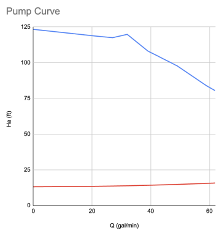
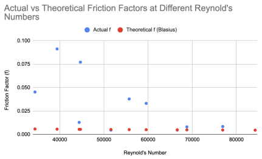

UO Lab Deliverable // April 8th, 2026
Pumps

In the UO lab, the pump system allows for variation of the power supplied to the pump and the volumetric flow rate. Data was collected on the inlet and outlet pressure. From the data compiled by the class, two sets of findings were collected and a pump curve was graphed. Pump curves represent the relationship between the pump head and capacity. A system curve, which is also represented on the graph, demonstrates the relationship between fluid flow and head requirements of the pump system. To analyze the data collected, we used Bernoulli’s equation and the equations for major and minor head losses. The biggest finding here is that, indicated by the vast difference between the pump curve and the system curve, the pump we were using for the experiment could handle much more than we were giving it. Another important observation about the pumps is that a greater frequency causes greater volumetric flow through the pump, and a greater pressure drop.
Pipes

For the pipe experiment, data was collected on the volumetric flow rate and pressure drop through pipes of different diameters. From this information, the friction factor was calculated, using equations that we covered in class. The graph depicts the experimentally determined friction factor and theoretical friction factor against Reynold’s number, to normalize the data across different pipe diameters. As a result, all data collected by the class is pictured, which includes all pipe diameters tested. Having all the data on one series allows the actual and theoretical friction factors to be directly compared, avoiding differences in scale and trying to mentally combine the data sets. The data points are not connected with a line, because there is no correlation between individual friction factors. Each experiment used different flow rates and pipe diameters, which means that though the data is normalized, we are not expecting a particular trend in friction factor.
Reynold’s number and the adjacent calculations, like finding velocity from volumetric flow rate, are topics learned in class that were directly applied in the UO lab. It was observed that as Reynold’s number increases, the actual friction factor approaches the Blasius friction factor. At the lower Reynold’s numbers, Blasius is not as applicable. At the largest Reynold’s number, 84235, the actual and theoretical friction factors were almost exactly equal, while at the lower Reynold’s numbers, around 34000-45000, the actual friction factors were much larger than their corresponding theoretical friction factors.
The following is a link to the project assignment. Keep in mind not everything is covered in this portfolio section and the assignment is here for reference.
Project Assignment